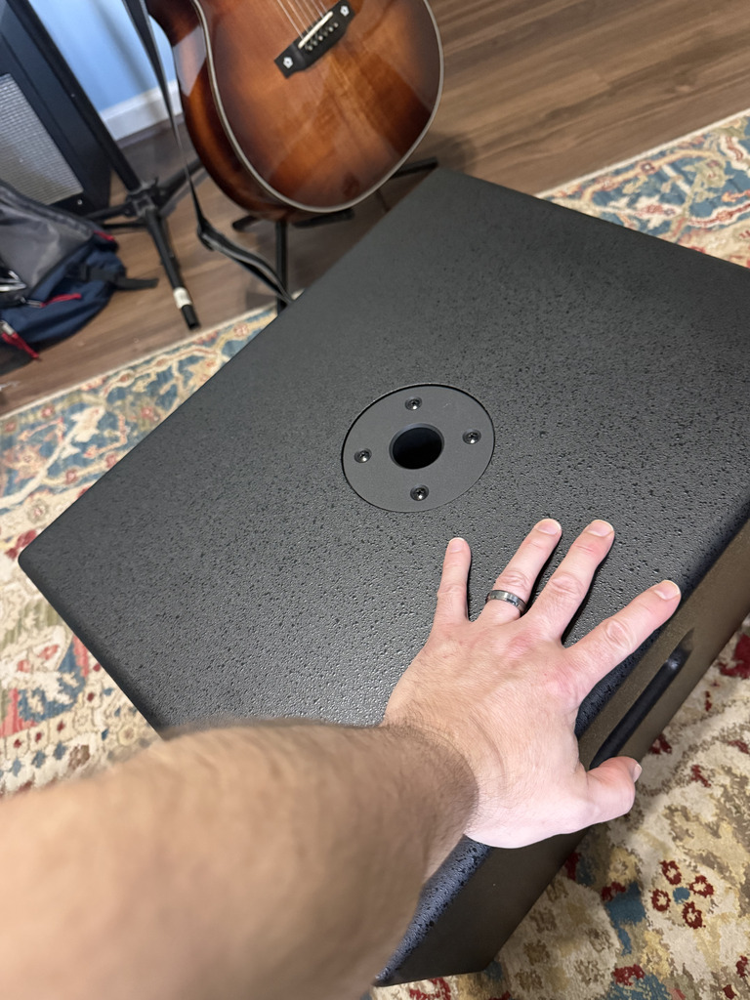
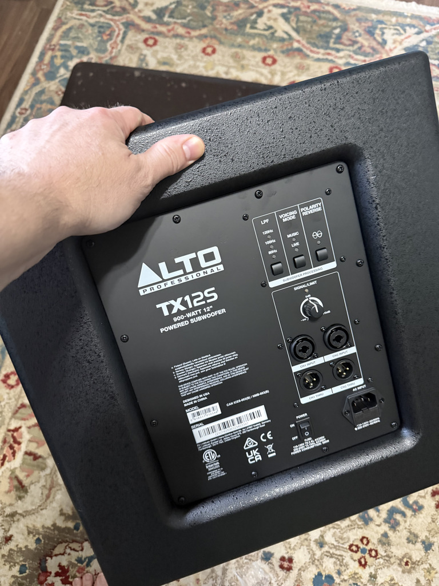

Boom Boom
The past couple years I have gotten over myself. Dad always told me it was fear. As much as I hate admitting it, dear old dad was right. Fear of failure can keep us from beginning. It doesn’t matter what it is. No matter what you want to accomplish, fear is there to stop us from making progress. It always seems to be the thing you don’t want to do most that is the very thing that you should do. So what made me get over myself? I like to joke, that it was Fascism.
Realizing you’re living in a fascist nightmare really makes you re-evaluate things! Maybe it was some of that mess on the news and maybe it’s just getting older and realizing that if I’m gonna look back without regrets I better - “gather my rosebuds while ye may!” Carpe Diem and all that mid-life crisis stuff.
Somehow, moving to Birmingham reset everything for me. I found other goobers and weirdos that get me. I found community and musical comradery. I broke out of my shell and I defeated my stage fright almost instantly and realized, I actually enjoy the rush. I ride that adrenaline like it’s a drug. Years and years I suffered a complete lack of confidence. Now I have it in spades. Wild turn of events I know! Most of life I was painfully shy and introverted. If I’m honest, I’m still introverted but shy, naw, not a chance these days.
So I played my first open mic after being a bedroom producer for almost 2 decades before that moment. All I can say is, I wasted a lot of time waiting to be perfect when I should have just made a fool out of myself years ago. Boom!
I caught the bug for the stage. Now I cant wait to get out there and do my thang. Lesson learned. Take it from me, just act a fool. People don’t care and all that can really happen is people laugh at you. So what, don’t take yourself too serious. Instead of laughs, I made friends I could laugh with and who have my back. Boom!
So now Noah Carbilicon and I are shopping around for gigs in the Birmingham area to show this town our Midi-mob mojo. I bought some 500w PA Tops and the 450w Sub-woofer just arrived! Boom! It’s time to bring the Cha House down. Let’s hope Cierra doesn’t kill me for making her shop vibrate. LOL!

